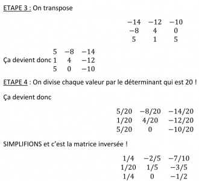
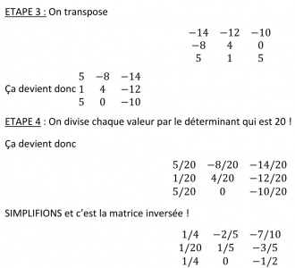

![[ANA JDG] Asterix and the Great Rescue - Megadrive](vi/6oUXi0ckLmA/default.jpg)
![[ Présentation pour la chaîne Grenier des Joueurs ] JDG Prod](art/SHAR.6419.583.2.jpg)


 Bienvenue sur KidpaddleetcieGlin , sachez que ce blog a très peu de rapport avec le reste de ma production vu que c'est ici où j'écris des tutoriels, des coups de gueules ou juste les textes de mes vidéos.
Bienvenue sur KidpaddleetcieGlin , sachez que ce blog a très peu de rapport avec le reste de ma production vu que c'est ici où j'écris des tutoriels, des coups de gueules ou juste les textes de mes vidéos. Je peux également faire de la PUB à des gens ,
présenter des vidéos / sites ,
aider dans vos cours ( liste des cours ici )
et mettre en avant des enquêtes ... mais c'est plus rare !
J'écris aussi des parodies / chansons / poèmes !
aider dans vos cours ( liste des cours ici )
et mettre en avant des enquêtes ... mais c'est plus rare !
J'écris aussi des parodies / chansons / poèmes !
Ma chaîne YouTube pour les tutoriels :
Ma chaîne YouTube pour les YouTube Poop :
Mon Dailymotion :
Ma Chaîne Bitchute :
Ma Chaîne Bit.Tube :
Mon Twitter :
Lorsque j'emplois du contenu d'autres personnes dans mes YTPs , je les renseignes ici:
Mon pseudo principal dans les jeux en ligne : Glin
Forum Shakes & Fidget : https://forum.sfgame.fr/member.php?u=7199
DeviantART : http://kidpaddleetcie.deviantart.com/
Behance : https://www.behance.net/glinkidpadd
Pinterest : https://fr.pinterest.com/Kidpaddleetcie/
Meme Center : http://www.memecenter.com/kidpaddleetcie/
Github : https://github.com/Kidpaddleetcie
Soundcloud : https://soundcloud.com/kidpaddleetcie-glin
Sketchfab : https://sketchfab.com/KidpaddleetcieGlin/models
SensCritique: https://www.senscritique.com/Glin_Kidpaddleetcie
ArtStation: https://www.artstation.com/glinkidpaddleetcie

Sachez que même si vous n'êtes pas connecté, chaque article peut accueillir un commentaire!N'hésiter donc pas de me dire votre avis et de me faire savoir si il y a des lacunes!

![[Aide Phénoménologie]Les différentes illusions](5252/79895252/pics/3291927220_1_7_SONb1ysJ.gif)
![[Aide Math]Inverser une matrice carré](5252/79895252/pics/3291639070_1_9_WCBVOqSD.png)
![[Aide Math]Inverser une matrice carré](5252/79895252/pics/3291639070_1_11_BTKdq8jp.png) 
![[Aide Math]La méthode générale pour le calcul du déterminant d'une matrice](5252/79895252/pics/3291636576_1_5_wVSoJBKQ.png)

{kind=link}
Partage